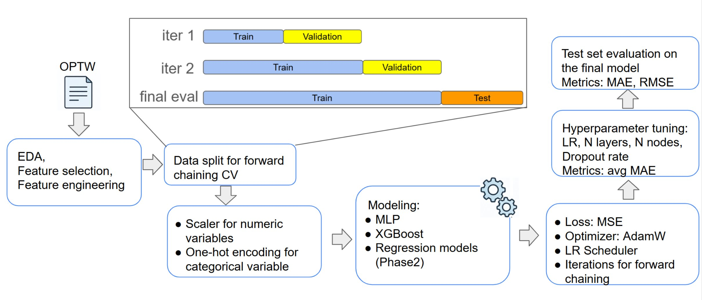
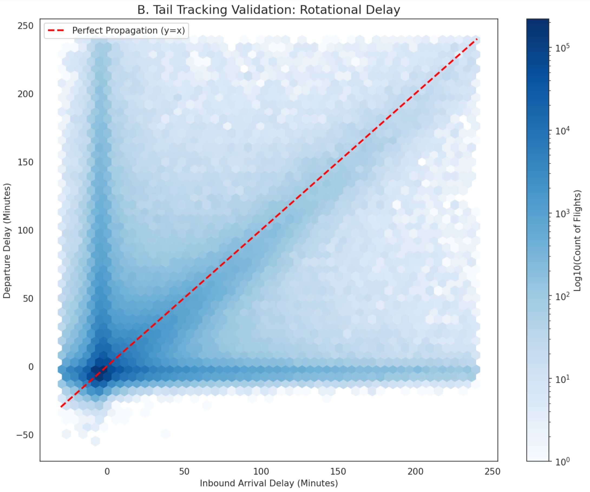
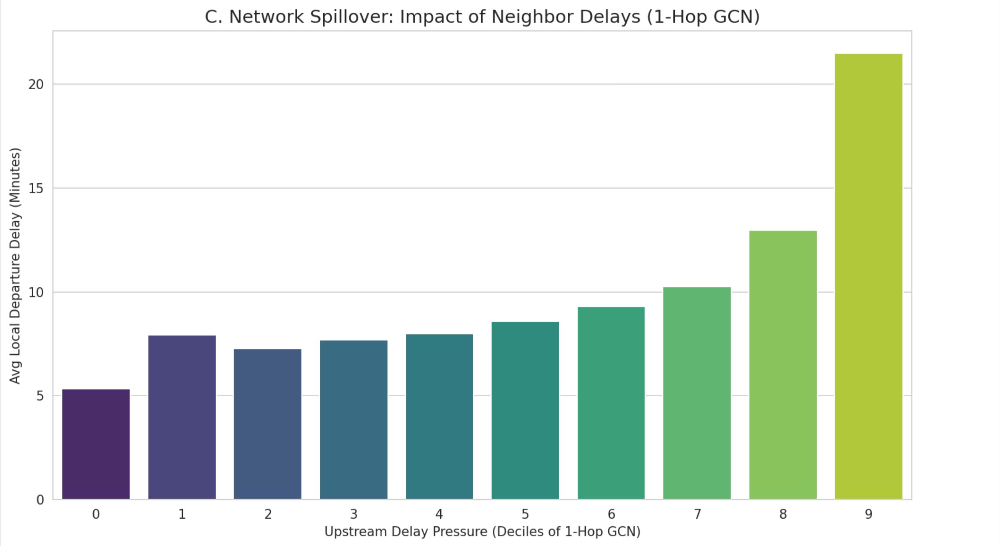
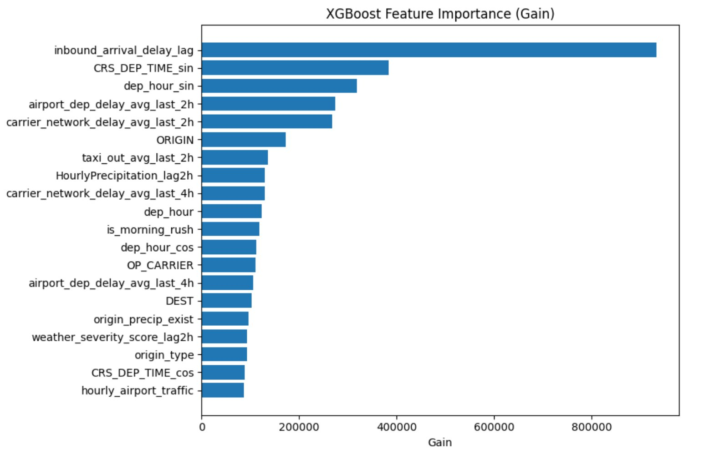
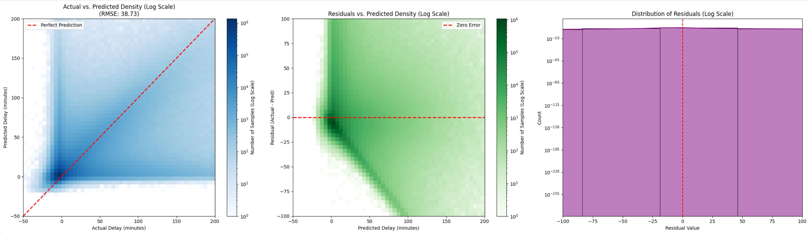
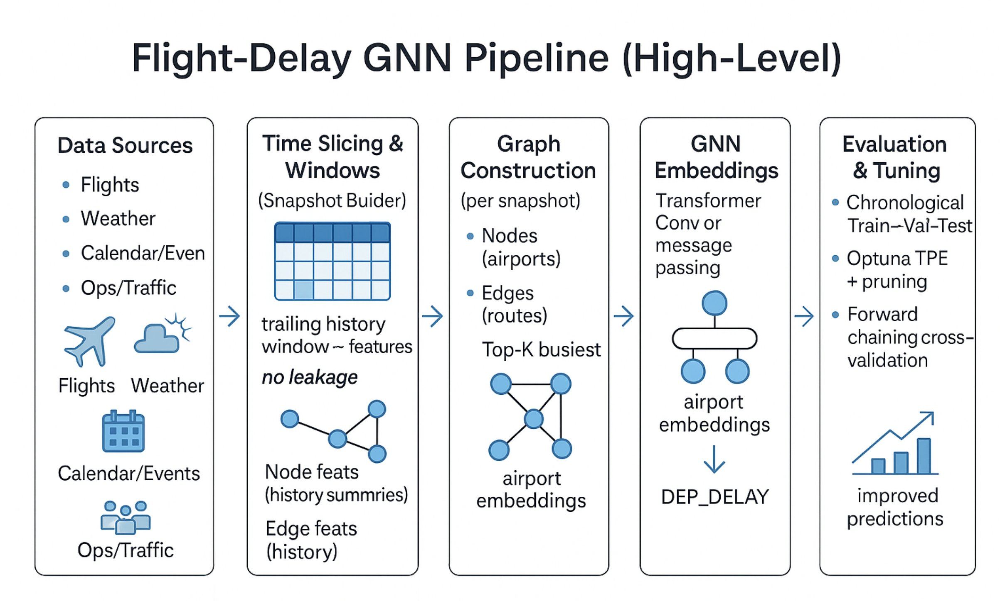

Predicting Flight Departure Delays
A regression pipeline to predict US domestic departure delays in minutes using only information available two hours before scheduled departure. Built on 31.7M flight records and 630M hourly weather observations processed with Apache Spark on Databricks.
Overview
Data was sourced from the US Department of Transportation (2015–2021) and NOAA hourly weather records, joined and processed on a Databricks cluster autoscaling to 12 worker nodes (~384 GB RAM). A forward-chaining cross-validation scheme prevented future data from leaking into training.
76 features were engineered across 7 categories. Three had the biggest effect: tail tracking (the inbound aircraft’s accumulated delay), 1-hop graph-convolutional network features capturing airport network spillover, and cyclical sin/cos temporal encoding.


Feature Engineering
- 01Tail tracking (the rotational domino effect)Reconstructed inbound aircraft flight chains so each flight carries the previous leg’s arrival delay. Flights accumulate delay but rarely recover time.
- 02Graph-convolutional network features1-hop GCN features capture weighted average delay of each airport’s network neighbors. Average local delay rises from ~5 to over 21 minutes between the 1st and 9th decile of upstream pressure.
- 03Cyclical temporal encodingHour-of-day, day-of-week, and month encoded as sin/cos pairs. Midnight and 23:00 should be close together numerically, not 23 units apart.


Results (one-year test set)
| Model | RMSE (min) | MAE (min) | Notes |
|---|---|---|---|
| Mean Baseline | 36.14 | 18.18 | — |
| Linear Regression | 32.75 | 14.16 | Strong linear benchmark |
| Random Forest | 33.70 | 15.33 | — |
| MLP | 35.70 | 17.02 | Underperforms linear |
| Graph Neural Network | 34.94 | 13.17 | Lowest MAE; weaker on tails |
| XGBoost★ best | 30.20 | 13.41 | 7.8% RMSE improvement over linear |



My Contributions
- Led EDA — identified the diurnal delay snowball effect, the two major seasonal peaks (summer convective storms and winter holiday surges), and carrier-level hub geography patterns; validated the join pipeline preserved the original departure delay distribution.
- Designed and implemented the GNN end-to-end: snapshot-temporal architecture using PyTorch Geometric TransformerConv layers, Optuna Bayesian hyperparameter search, top-K airport pruning, and single-snapshot batching to keep memory tractable on the cluster.